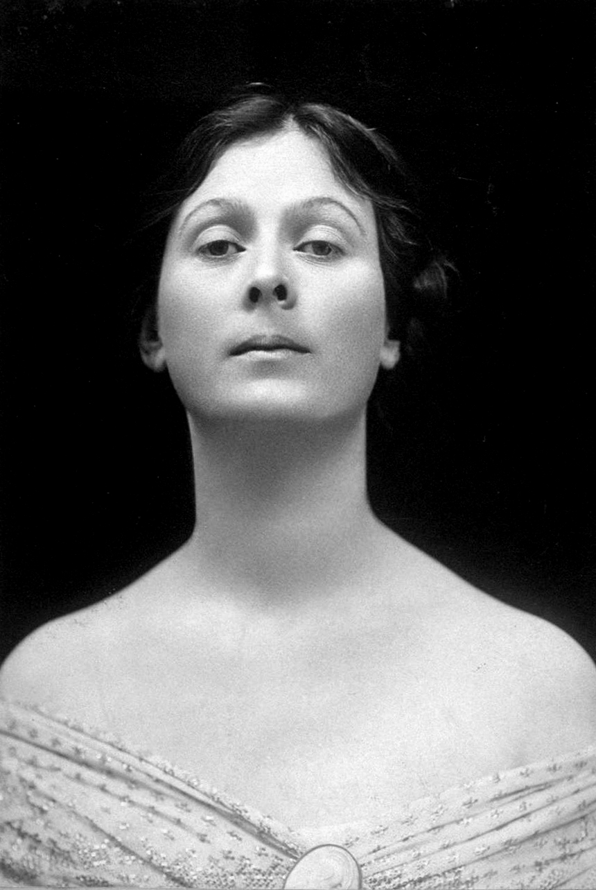

La danza contemporanea es una fusion de diferentes estilos cuya base se encuentra en el ballet clasico, pero libre de la disciplina de este estilo. Por el contrario, se caracteriza por una total libertad en los movimientos y en la expresion corporal.
Los origenes del movimiento datan a finales del siglo XIX cuando bailarinas como Loie Fuller, Isadora Duncan, Martha Graham, entre otras, sintieron demasiadas restricciones en el ballet para expresarse.
Su libertad a la hora de bailar rompiendo todas las normas del ballet hacen que se considere a Isadora Duncan, la creadora de la danza moderna. Isadora nació el 27 de Mayo de 1877 en San Francisco.
Vamos a hablar de 4 tecnicas de la danza contemporanea,La tecnica Duncan, La tecnica Graham, La tecnica Hawkins y La tecnica Limon.
Isadora Duncan fue una bailarina y coreografa estadounidense. Duncan apoyo los movimientos libres y naturales, se inspiro en las danzas folcloricas,las danzas naturales,la naturaleza,las danzas sociales, las artes griegas, entre otras. Isadora estaba convencida de que no era su cuerpo el que bailaba,sino su esencia,su alma, su interior.
